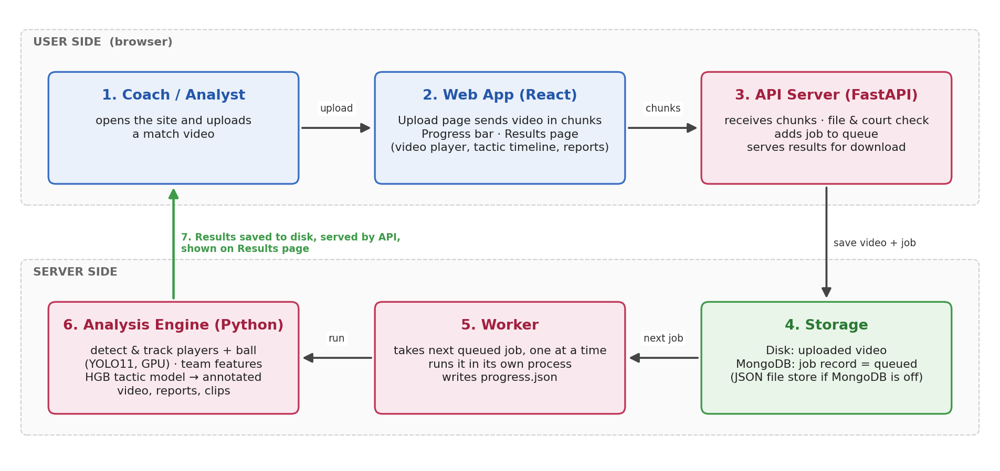

Figure 2: Analysis Pipeline inside the Engine
| Team Members | Project Guide | Project Type | |
|---|---|---|---|
| CB.SC.U4CSE23415 | G. Bharath Chandra | Dr. Divya Singh Assistant Professor, Dept. of CSE | Type 2 Application-Based Project |
| CB.SC.U4CSE23420 | K. Surya Sekhar | ||
| CB.SC.U4CSE23425 | Keshavramprakash D. | ||
| CB.SC.U4CSE23453 | U. Yeshwanth Kumar Reddy | ||
| CB.SC.U4CSE23768 | V. Punith Sai | ||
Volleyball coaches usually study match videos by hand to see how their team moves together. This takes a long time, and different people can judge the same rally differently. This project is a web application that does this automatically from an ordinary match video recorded with one camera. The user uploads a video and chooses the part to analyse. The system first checks that the video shows a volleyball court with players. It then finds and follows every player and the ball, separates the two teams, and studies how the near-side team moves and positions itself around the ball. A trained machine-learning model then names the team's tactic for every second of play: Coordinated Attack, Coordinated Defense, Delayed Support or Spacing Breakdown. The user receives an annotated video, a timed tactic report, a list of the opponent's serves, spikes and blocks, and short example clips. The application is complete and works end to end on a laptop with a graphics card, and all functional tests passed. On match videos the model had never seen, it named the correct tactic 63.7% of the time, compared with 39.0% for simple guessing.
| Req. ID | Category | Requirement Specification |
|---|---|---|
| FR-1 | Functional | Upload a match video (MP4, MOV, AVI, MKV, WebM) and choose the part to analyse. |
| FR-2 | Functional | Find and track players and the ball; give the near-side team one of 4 tactics for every second of play. |
| FR-3 | Functional | Show an annotated video and give downloadable reports: tactic timeline and opponent SERVE / SPIKE / BLOCK. |
| FR-4 | Functional | Keep a list of each user's past analyses. |
| NFR-1 | Non-Functional | Refuse wrong or non-volleyball files early with a clear message; show live progress while the video is being analysed. |
| NFR-2 | Non-Functional | Run on a normal laptop with a graphics card (NVIDIA RTX 3050); needs only one camera, no sensors or wearables. |
Figure 1 shows how the application works, from upload to result. (1) The coach opens the website and uploads a match video. (2) The web page sends the video to the server in small parts and shows an upload progress bar. (3) The server checks that the file is a real video and that a volleyball court with players is visible, then places the job in a waiting line (queue). (4) The video is saved, and a record of the job is stored in the database. (5) A worker picks up one job at a time and starts the analysis. (6) The analysis engine finds the players and the ball, follows them through the video, and the trained model names the tactic for each second. (7) The finished video, reports and clips are saved and shown on the Results page. Figure 2 shows the steps inside the analysis engine.

| Application Module | Implemented Features & Integration Details | Status |
|---|---|---|
| Module 1: User Interface | Home, Analyze, Progress, Results, My analyses, Demos, Methodology, Documentation and Team pages; desktop app. | Complete |
| Module 2: Core Analysis | Video check, player and ball detection, player tracking, team separation, tactic model, opponent action detection, annotated video, reports and clips. | Working; known accuracy limits |
| Module 3: Data & Storage | A database record and a folder for every analysis; old analyses are deleted automatically after 14 days. | Complete |
| Module 4: External Integration | Graphics card (GPU) for fast detection, FFmpeg for video, public project website. | Complete (GPU cloud: future) |
| Test Case / Feature | Input / User Action | Observed Output | Result |
|---|---|---|---|
| TC-01: Full analysis | 150-second match video, Accurate mode | annotated video, 40 timed tactic segments, 9 opponent actions, example clips for all 4 tactics | Pass |
| TC-02: Video check (real match) | all 11 match videos in our dataset | all accepted | Pass |
| TC-03: Video check (not volleyball) | street photo, test pattern, screen recording | refused with a clear message | Pass |
| TC-04: Wrong file type | a PDF document | refused; the allowed file types are shown | Pass |
| TC-05: Fake video file | a text file renamed to .mp4 | detected and refused | Pass |
| TC-06: File too large | a 5 GB file | refused before the upload starts | Pass |
| TC-07: Security check | request for a missing analysis and for a hidden server file | refused; nothing shown | Pass |
| TC-07b: Cross-user security | a second browser tries to list, cancel, delete or upload into another user's analysis | hidden or refused (403 / 404) in all 6 checks | Pass |
| TC-08: Automated tests | 266 automatic code checks | all 266 passed | Pass |


Evaluation & Usability Summary: All test cases passed, including 6 cross-user security checks (evidence/functional_tests.json). Three full analyses of 1 to 2.5 minutes of match video finished on the laptop and produced every output. On the laptop's graphics card, one minute of 1080p video takes about 7 minutes to analyse, so the tool is meant for review after a match, not for live use. To measure accuracy fairly, the model was trained on 7 match videos and tested on the 8th, and this was repeated for all 8 videos (945 labelled one-second clips). Table 4 compares our model with other models tested in the same way. On the same folds, macro-F1 is 0.54 and weighted-F1 0.66; Attack and Defense reach F1 of about 0.77, while Delayed Support and Spacing Breakdown reach about 0.3 and are mostly confused with each other. InceptionTime and HGB are statistically tied (Wilcoxon over the 8 videos, p = 0.11); HGB is better on 6 of 8 videos. Player tracking reaches IDF1 0.70 on hand-labelled boxes, and court calibration predicts a hidden court line within a median of 5 cm (evidence/*.json).
| Model | Type | Correct Tactic |
|---|---|---|
| HGB, our model (used in the app) | Machine learning | 63.7% |
| InceptionTime | Deep learning | 61.9% |
| Mamba | Deep learning | 46.1% |
| Always guessing the most common tactic | Baseline | 39.0% |
| Deliverable Category | Details / Title / Repository Link | Status |
|---|---|---|
| Source Code Repository | github.com/Yeshwanthreddy7/volleyball-tactical-intelligence-fyp; documentation, 266 automated tests, version 1.0.0 | Completed |
| Working Application | Website running on the laptop, desktop app and Windows installer | Completed |
| Individual Online Certifications | G. Bharath Chandra: Python for Computer Vision with OpenCV and Deep Learning (Udemy, 10 h); K. Surya Sekhar: Computer Vision Basics (Coursera (University at Buffalo), 12 h); Keshavramprakash D.: Master Computer Vision: OpenCV4 in Python with Deep Learning (Coursera, 16 h); U. Yeshwanth Kumar Reddy: Python for Computer Vision with OpenCV and Deep Learning (Udemy, 10 h); V. Punith Sai: Python for Computer Vision with OpenCV and Deep Learning (Udemy, 10 h) | Completed |
| Group TEA Deliverable 1 | Project-specific dataset release: Volleyball Backcourt View Dataset on IEEE DataPort, https://ieee-dataport.org/documents/volleyball-backcourt-view-dataset | Completed |
| Group TEA Deliverable 2 | Project website (Hugging Face Space): https://huggingface.co/spaces/yeshwanthkumarreddy/volleyball-tactical-analysis | Completed |
| Group TEA Deliverable 3 | Open-source repository: https://github.com/Yeshwanthreddy7/volleyball-tactical-intelligence-fyp.git | Completed |
[1] Y. Zhang, W. Liu, D. Xu, Z. Zhou, and Z. Wang, “Bi-Causal: Group activity recognition via bidirectional causality,” in Proc. IEEE/CVF Conf. Computer Vision and Pattern Recognition (CVPR), pp. 1450–1459, 2024.
[2] M. S. Ibrahim, S. Muralidharan, Z. Deng, A. Vahdat, and G. Mori, “A hierarchical deep temporal model for group activity recognition,” in Proc. IEEE Conf. Computer Vision and Pattern Recognition (CVPR), pp. 1971–1980, 2016.
[3] G. Jocher and J. Qiu, “Ultralytics YOLO11.” https://github.com/ultralytics/ultralytics, 2024.
[4] N. Aharon, R. Orfaig, and B.-Z. Bobrovsky, “BoT-SORT: Robust associations multi-pedestrian tracking,” arXiv:2206.14651, 2022.
[5] F. Pedregosa et al., “Scikit-learn: Machine learning in Python,” Journal of Machine Learning Research, vol. 12, pp. 2825–2830, 2011.
[6] L. Grinsztajn, E. Oyallon, and G. Varoquaux, “Why do tree-based models still outperform deep learning on typical tabular data?,” in Proc. NeurIPS Datasets and Benchmarks Track, 2022.
[7] H. Ismail Fawaz et al., “InceptionTime: Finding AlexNet for time series classification,” Data Mining and Knowledge Discovery, vol. 34, pp. 1936–1962, 2020.
[8] R. Hartley and A. Zisserman, Multiple View Geometry in Computer Vision, 2nd ed. Cambridge University Press, 2004.
[9] K. Bernardin and R. Stiefelhagen, “Evaluating multiple object tracking performance: The CLEAR MOT metrics,” EURASIP Journal on Image and Video Processing, 2008.
[10] A. Gu and T. Dao, “Mamba: Linear-time sequence modeling with selective state spaces,” arXiv:2312.00752, 2023.
[11] S. Ramírez, “FastAPI documentation.” https://fastapi.tiangolo.com, 2024.
[12] Meta Open Source, “React documentation.” https://react.dev, 2024.
[13] MongoDB Inc., “MongoDB 7.0 manual.” https://www.mongodb.com/docs/manual, 2024.